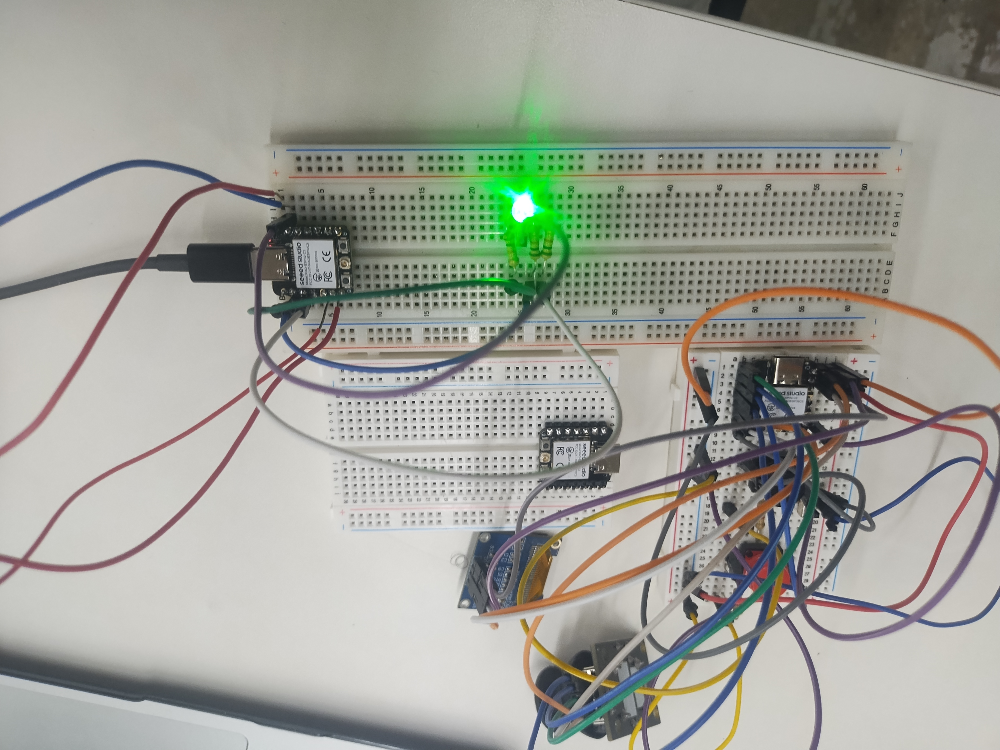
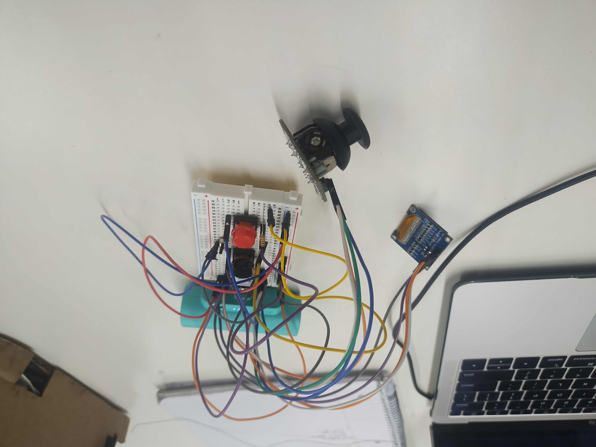
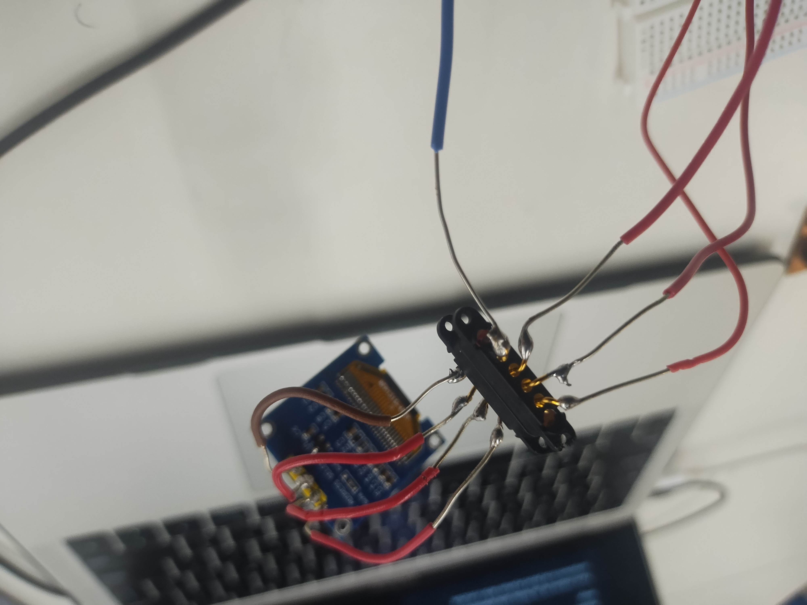
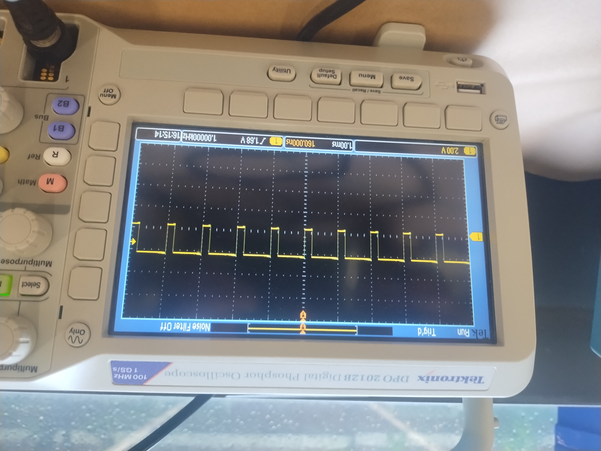
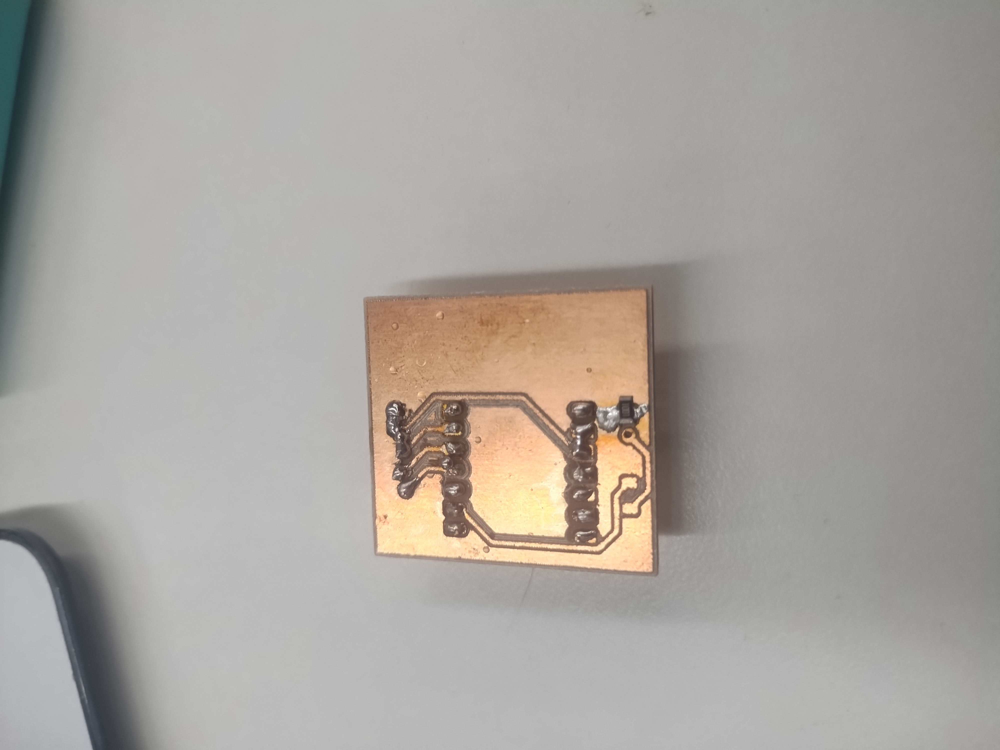
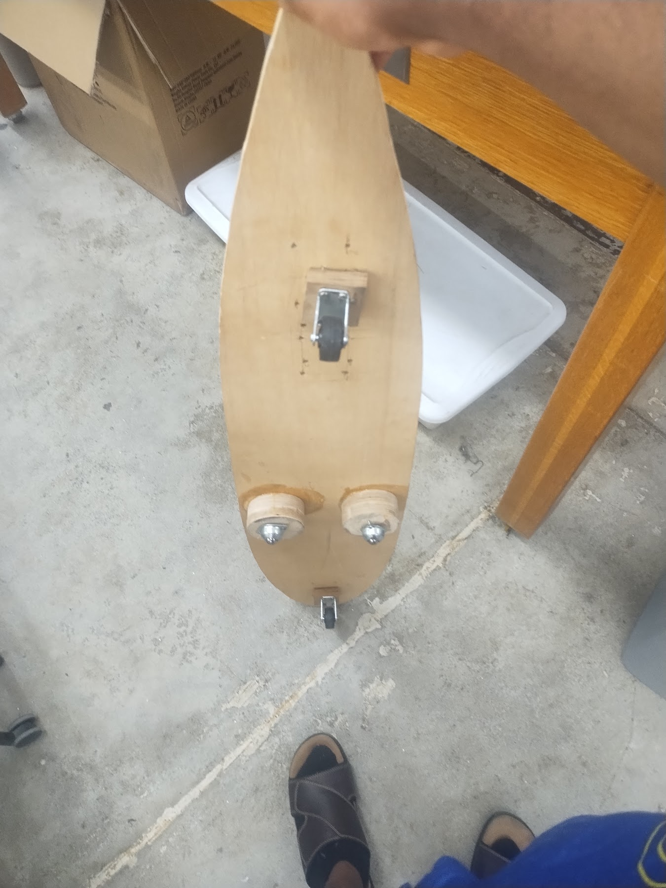

On this page
MVP Documentation • Embedded Systems • Digital Fabrication
Inventa Hub
Building Intelligence
The original goal of Inventa was to create a modular robot system. During development, the project evolved into a broader physical computing platform where users are not restricted to one predefined outcome.
Final MVP Demo showing all the completed components working
Design Philosophy
Project Evolution
The original concept of Inventa was a modular robot platform. However, during development, a major limitation became apparent: many educational kits claim to encourage creativity while still restricting users to a specific final product.
The goal of Inventa changed from creating a robot into creating a system where users decide what they want to build. Instead of providing a finished robot structure, Inventa provides a programmable hub, communication system, and modular components. Eventually evolving into a lego addon due to the freedom that having lego bricks have in terms of creativity.
This allows the same system to create robots, IoT devices, smart environments, interactive objects, and experimental structures.
System Design
Inventa Architecture

The major components of Inventa's MVP Stage: The controller, the hub, the motor hub. The hub talks to the web studio over websocket and sends information over hotspot or wifi communication between both devices. On the other hand, the controller makes use of Radio (ESP-Now) to communicate with the motor controller. The need for this separation is because of the fact that the Hub is already running WiFi so adding radio may make the connection unstable.
The MVP consists of four primary systems: the controller, the hub, the web-based Inventa Studio and the motor hub for driving and controlling motors.
The controller communicates with the motor hub using ESP-NOW, allowing low latency wireless control without requiring an internet connection.
The hub manages module communication and connects with the web interface through WiFi.
Software Development
Inventa Studio
A major part of the MVP was creating the digital workspace that allows users to design projects.
The node system was developed to allow users to visually program their devices using modular blocks instead of writing traditional code.
The workspace was expanded to include project creation, function management, other organization systems such as the data workspace. A major part of this system was the need for each node to have metadata and over the time I had to work on the project, this took up a while and bythe MVP was able to get the major blocks to have metadata so the platform is easier to use.
The Inventa node-based programming environment.
Embedded System
ESP32 Controller
The controller prototype was created using a joystick connected to an ESP32-C3 development board.
The joystick provides user input while the ESP32 processes the data and transmits commands wirelessly to the hub.
Communication was implemented using ESP-NOW to provide direct device-to-device communication.
It both sends and receives and information to make sure that the hub is even connected.

Breadboard prototype of the Inventa wireless controller.
Programming
Controller Communication Code
#include <Wire.h>
#include <Adafruit_GFX.h>
#include <Adafruit_SSD1306.h>
#include <WiFi.h>
#include <esp_now.h>
#define SCREEN_WIDTH 128
#define SCREEN_HEIGHT 64
#define I2C_SDA D4
#define I2C_SCL D5
enum SpecialCommand {
NONE = 0,
HUB_AVAILABLE = 1,
HUB_BUSY = 2,
START_BUILD = 3,
STOP_BUILD = 4
};
typedef struct {
char xCommand[10];
char yCommand[10];
bool Mode;
uint8_t specialCommand;
} dataPacket;
uint8_t robotMAC[] = {
0x94, 0xA9, 0x90, 0x6D, 0xF5, 0x6C
};
dataPacket data;
String currentPage = "Home";
int timeOut = 12000;
bool EmergencyStop = false;
unsigned long lastRecieved = 0;
unsigned long lastSend = 0;
unsigned long delayLoad = 0;
TwoWire I2C_screen = TwoWire(0);
Adafruit_SSD1306 display(SCREEN_WIDTH, SCREEN_HEIGHT, &I2C_screen, -1);
class Button {
int pin;
bool storedState;
public:
Button(int pinNum) {
pin = pinNum;
pinMode(pin, INPUT_PULLUP);
}
bool getButtonState() {
if (digitalRead(pin) == LOW) {
return true;
}
return false;
}
};
class Joystick {
int xPin;
int yPin;
int buttonPin;
String prevPin;
public:
Joystick(int x, int y, int button) {
xPin = x;
yPin = y;
String prevPin = "";
buttonPin = button;
pinMode(xPin, INPUT);
pinMode(yPin, INPUT);
pinMode(buttonPin, INPUT_PULLUP);
}
String getCommandX() {
int JoystickOutput = analogRead(xPin);
if (JoystickOutput < 2900) {
return "Left";
} else if (JoystickOutput > 3900) {
return "Right";
} else {
return "None";
}
}
String getCommandY() {
int JoystickOutput = analogRead(yPin);
if (JoystickOutput < 3100) {
return "Up";
} else if (JoystickOutput > 3900) {
return "Down";
} else {
return "None";
}
}
int getSpeed() {
int JoystickOutput = analogRead(yPin);
return map(JoystickOutput, 0, 4095, -100, 100);
}
bool isButtonPressed() {
if (digitalRead(buttonPin) == LOW) {
return true;
}
return false;
}
};
Button Home(D7);
Button Mode(D6);
Button Stop(D2);
Joystick Controller(A0, A1, D3);
void GoHome() {
I2C_screen.begin(I2C_SDA, I2C_SCL, 100000);
if (!display.begin(SSD1306_SWITCHCAPVCC, 0x3C)) {
Serial.println("SSD1306 allocation failed");
while (1)
;
}
display.clearDisplay();
display.setTextColor(SSD1306_WHITE);
display.setTextSize(1);
display.setCursor(0, 0);
display.println("--------------------");
display.println("INVENTA");
display.println("--------------------");
if (Mode.getButtonState() == 0) {
display.println("MODE: DRIVE");
} else {
display.println("MODE: BUILD MODE");
}
display.println("POWER: USB");
display.println("HUB: CONNECTING");
if (Mode.getButtonState() == 0) {
display.println("SPEED: 0%");
}
display.display();
}
void transitionPage(int duration, void (*nextPage)()) {
String messages[5] = {
"- Welcome To Inventa",
"- Here we compute all the computations",
"- Your likely here because you want to drive your robot",
"- Hahaha, Good Luck!!!",
"- Sincerely jak3y.t3chss :)"
};
int i = 0;
display.clearDisplay();
display.setTextColor(SSD1306_WHITE);
display.setTextSize(1);
display.setCursor(0, 32);
display.println(messages[0]);
display.display();
long prevMillis = millis();
while (i < 5) {
if (millis() - prevMillis >= 10000) {
i++;
prevMillis = millis();
//changeMessage
if (i < 5) {
display.clearDisplay();
display.setTextColor(SSD1306_WHITE);
display.setTextSize(1);
display.setCursor(0, 32);
display.println(messages[i]);
display.display();
} else {
nextPage();
}
}
}
}
bool connectToHub() {
WiFi.mode(WIFI_STA);
if (esp_now_init() != ESP_OK) {
display.clearDisplay();
display.setTextColor(SSD1306_WHITE);
display.setTextSize(1);
display.setCursor(0, 0);
display.println("INVENTA HOME");
display.println("--------------------");
if (Mode.getButtonState() == 0) {
display.println("MODE: DRIVE");
} else {
display.println("MODE: BUILD MODE");
}
display.println("POWER: USB");
display.println("HUB: FAILED TO CONNECT");
if (Mode.getButtonState() == 0) {
display.println("SPEED: 0%");
}
display.display();
return false;
}
esp_now_peer_info_t peerInfo = {};
memcpy(peerInfo.peer_addr, robotMAC, 6);
peerInfo.channel = 0;
peerInfo.encrypt = false;
esp_now_add_peer(&peerInfo);
return true;
}
void onDataRecv(const esp_now_recv_info_t *info, const uint8_t *incomingData, int len) {
if (len == sizeof(dataPacket)) {
memcpy(&data, incomingData, sizeof(data));
}
lastRecieved = millis();
}
void setup() {
GoHome();
if (connectToHub()) {
esp_now_register_recv_cb(onDataRecv);
}
Serial.begin(9600);
transitionPage(5, GoHome);
}
void loop() {
if (millis() - lastSend >= 50) {
esp_err_t result =
esp_now_send(robotMAC,
(uint8_t *)&data,
sizeof(data));
if (result != ESP_OK) {
Serial.printf("Send failed: %d\n", result);
}
lastSend = millis();
}
if (millis() - lastRecieved >= timeOut) {
display.clearDisplay();
display.setTextColor(SSD1306_WHITE);
display.setTextSize(1);
display.setCursor(0, 0);
display.println("INVENTA HOME");
display.println("--------------------");
if (Mode.getButtonState() == 0) {
display.println("MODE: DRIVE");
} else {
display.println("MODE: BUILD MODE");
}
display.println("POWER: USB");
display.println("HUB: HUB DISCONNECTED");
if (Mode.getButtonState() == 0) {
display.println("SPEED: 0%");
}
display.display();
} else if (millis() - lastRecieved < timeOut && lastRecieved > 0) {
if (currentPage == "Home" && Controller.getCommandX() == "None" && Controller.getCommandY() == "None") {
display.clearDisplay();
display.setTextColor(SSD1306_WHITE);
display.setTextSize(1);
display.setCursor(0, 0);
display.println("INVENTA HOME");
display.println("--------------------");
if (Mode.getButtonState() == 0) {
display.println("MODE: DRIVE");
} else {
display.println("MODE: BUILD MODE");
}
display.println("POWER: USB");
display.println("HUB: HUB CONNECTED");
if (Mode.getButtonState() == 0) {
display.println("SPEED: 0%");
}
display.display();
} else if ((Controller.getCommandX() != "None" || Controller.getCommandY() != "None") && Mode.getButtonState() == 0 && currentPage == "Home") {
String motion;
String direction;
String speed = "0";
if (Controller.getCommandY() == "Up") {
motion = "FORWARD";
} else if (Controller.getCommandY() == "Down") {
motion = "REVERSE";
} else {
motion = "NOT MOVING";
}
if (Controller.getCommandX() == "Left") {
direction = "LEFT";
} else if (Controller.getCommandX() == "Right") {
direction = "RIGHT";
} else {
direction = "STRAIGHT";
}
display.clearDisplay();
display.setTextColor(SSD1306_WHITE);
display.setTextSize(1);
display.setCursor(0, 0);
display.println("DRIVING");
display.println("--------------------");
display.println("MOTION: " + motion);
display.println("DIRECTION: " + direction);
if (abs(Controller.getSpeed()) > 10) {
speed = abs(Controller.getSpeed());
} else {
speed = speed;
}
delayLoad = millis();
display.println("SPEED: " + speed + "%");
display.display();
}
}
if (Stop.getButtonState() == 0 && Mode.getButtonState() == 0 && currentPage != "Stop" && millis() - lastRecieved < timeOut) {
EmergencyStop = true;
currentPage = "Stop";
}
if (EmergencyStop == true && currentPage == "Stop" && millis() - lastRecieved < timeOut) {
display.clearDisplay();
display.setTextColor(SSD1306_WHITE);
display.setTextSize(1);
display.setCursor(0, 0);
display.println("EMERGENCY STOP");
display.println("--------------------");
display.println("PRESS HOME TO RETURN");
display.println("");
display.println("IT IS THE BUTTON WITH HOME ON IT");
display.display();
}
if (Home.getButtonState() == 0 && currentPage != "Home") {
currentPage = "Home";
EmergencyStop = false;
GoHome();
}
Serial.println(Stop.getButtonState());
}
Embedded System
Motor Hub
This is intended as the reciever for the Joystick. This is separate from the central hub because of the special cases that encompass using a motor
The joystick sends information to this in order to communicate with it directly. This only sends messages back once in a while to tell the joystick that it is active and ready to receive information
Programming
Motor Hub Communication Code
#include <WiFi.h>
#include <esp_now.h>
enum SpecialCommand {
NONE = 0,
HUB_AVAILABLE = 1,
HUB_BUSY = 2,
START_BUILD = 3,
STOP_BUILD = 4
};
typedef struct {
char xCommand[10];
char yCommand[10];
bool Mode;
uint8_t specialCommand;
} dataPacket;
uint8_t controllerMAC[] = {
0x94, 0xA9, 0x90, 0x6D, 0xB7, 0x30
};
unsigned long lastWifiAttempt = 0;
dataPacket data;
int timeOut = 3000;
long lastRecieved = 0;
unsigned long lastSend = 0;
bool setupMode = false;
bool connectToHub() {
WiFi.mode(WIFI_AP_STA);
if (esp_now_init() != ESP_OK) {
return false;
}
esp_now_peer_info_t peerInfo = {};
memcpy(peerInfo.peer_addr, controllerMAC, 6);
peerInfo.channel = 0;
peerInfo.encrypt = false;
esp_now_add_peer(&peerInfo);
return true;
}
void onDataRecv(const esp_now_recv_info_t *info, const uint8_t *incomingData, int len) {
if (len == sizeof(dataPacket)) {
memcpy(&data, incomingData, sizeof(data));
}
lastRecieved = millis();
}
bool connectedToJoystick = false;
void setup() {
// put your setup code here, to run once:
if (connectToHub()) {
esp_now_register_recv_cb(onDataRecv);
connectedToJoystick = true;
}
}
void loop() {
if (connectedToJoystick) {
data.specialCommand = HUB_AVAILABLE;
if (millis() - lastSend >= 100) {
esp_err_t result =
esp_now_send(controllerMAC,
(uint8_t *)&data,
sizeof(data));
if (result != ESP_OK) {
Serial.printf("Send failed: %d\n", result);
}
lastSend = millis();
}
}
}
Embedded System
Main Inventa Hub
This is the major brain of inventa. It communicates with modules and with the computer using an I2C bus
This uses HTTP to host a website and communicate initially and then after that it uses WiFi to communicate with the computer and uses I2C address to scan for addresses
Programming
Main Inventa Hub Code
#include <WiFi.h>
#include <ESPmDNS.h>
#include <Preferences.h>
#include <AsyncTCP.h>
#include <ESPAsyncWebServer.h>
#include <DNSServer.h>
#include <WiFi.h>
Preferences prefs;
AsyncWebServer server(80);
AsyncWebSocket ws("/ws");
//Variables
int red = D0;
int blue = D2;
int green = D1;
int passedTime = 0;
bool wasLogged;
String SSID;
String PASSWORD;
long prevChecked = 0;
bool connectRequested = false;
DNSServer dns;
const byte DNS_PORT = 53;
// Runs when the hub successfully connects
// to an existing WiFi network
void normalHubStart() {
if (WiFi.status() == WL_CONNECTED) {
wasLogged = true;
// Start mDNS so the hub can be discovered
MDNS.begin("inventa-hub");
// Green status LED
analogWrite(red, 255);
analogWrite(green, 0);
analogWrite(blue, 255);
}
// Enable WebSocket communication
server.addHandler(&ws);
server.begin();
}
// WebSocket event handler
void onWsEvent(
AsyncWebSocket *server,
AsyncWebSocketClient *client,
AwsEventType type,
void *arg,
uint8_t *data,
size_t len
) {
}
// Starts the Inventa WiFi configuration mode
void startSetupMode() {
// Disconnect previous connections
WiFi.disconnect(true);
// Enable access point mode
WiFi.mode(WIFI_AP);
WiFi.mode(WIFI_AP_STA);
// Configure hotspot IP address
WiFi.softAPConfig(
IPAddress(192,168,4,1),
IPAddress(192,168,4,1),
IPAddress(255,255,255,0)
);
// Create Inventa setup network
WiFi.softAP(
"Inventa-Setup",
"Building_Intelligence"
);
delay(200);//This delay is fine because at this point the system need to pause for a bit and let the computer to catch up
// Redirect all DNS requests
// back to the hub captive portal
dns.start(DNS_PORT, "*", IPAddress(192,168,4,1));
// LED indicates setup mode
analogWrite(red, 255);
analogWrite(green, 255);
analogWrite(blue, 255);
// Main captive portal page
server.on("/", HTTP_GET, [](AsyncWebServerRequest *request){
request->send(200, "text/html", R"rawliteral(
<!DOCTYPE html>
<html lang="en">
<head>
<meta charset="UTF-8">
<meta name="viewport" content="width=device-width, initial-scale=1.0">
<title>
Inventa WiFi Setup
</title>
<style>
:root {
--bg-main:#070b14;
--panel:rgba(16,24,42,0.78);
--accent:#6aa9ff;
--accent-2:#8b5cf6;
--text-main:#f5f7ff;
--text-muted:#9aa6c5;
}
* {
box-sizing:border-box;
margin:0;
padding:0;
}
body {
min-height:100vh;
font-family:
Inter,
SF Pro Display,
system-ui,
sans-serif;
background: radial-gradient(circle at top left, rgba(106,169,255,.18), transparent 28%), linear-gradient(160deg, #050912, #0a1020);
color:var(--text-main);
display:flex;
align-items:center;
justify-content:center;
padding:32px;
}
.setup-card {
width:100%;
max-width:520px;
background: var(--panel);
border: 1px solid rgba(255,255,255,.08);
border-radius:24px;
padding:34px;
backdrop-filter: blur(18px);
}
</style>
</head>
<body>
<section class="setup-card">
<h1>
Connect Your Inventa Hub
</h1>
<p>
Enter your WiFi information to connect
your hub to the network.
</p>
<form action="/save" method="POST">
<input type="text" name="ssid" placeholder="WiFi Network Name" required>
<br><br>
<input type="password" name="password" placeholder="WiFi Password">
<br><br>
<button type="submit">
Save WiFi Settings
</button>
</form>
</section>
</body>
</html>
)rawliteral");
});
// Save WiFi credentials from captive portal
server.on("/save", HTTP_POST, [](AsyncWebServerRequest *request) {
if(request->hasParam("ssid", true)) {
SSID = request->getParam("ssid",true) -> value();
}
if(request->hasParam("password", true)) {
PASSWORD = request->getParam("password", true) -> value();
}
// Store network credentials
// using ESP32 Preferences memory
prefs.begin("wifi_info", false);
prefs.putString("ssid", SSID);
prefs.putString("pass", PASSWORD);
prefs.end();
// Move to connection status page
if(SSID != "") {
request->redirect("/connecting");
}
});
// Connecting status page
server.on("/connecting", HTTP_GET, [](AsyncWebServerRequest *request) {
prefs.begin("wifi_info", true);
String ssid = prefs.getString("ssid", "");
String pass = prefs.getString("pass", "");
prefs.end();
// Attempt network connection
WiFi.begin(ssid, pass);
request->send(200, "text/html", R"rawliteral(
<!DOCTYPE html>
<html>
<head>
<title>
Inventa - Information Sent
</title>
<style>
body {
background: #070b14;
color:white;
font-family: Inter, system-ui, sans-serif;
display:flex;
height:100vh;
justify-content:center;
align-items:center;
}
.card {
background: rgba(16,24,42,.8);
border: 1px solid rgba(255,255,255,.1);
border-radius:24px;
padding:40px;
max-width:520px;
text-align:center;
backdrop-filter: blur(18px);
}
.success {
color:#34d399;
font-size:60px;
}
button {
margin-top:20px;
padding:14px 24px;
border:none;
border-radius:14px;
background: linear-gradient(135deg, #6aa9ff, #8b5cf6);
color:white;
font-weight:bold;
}
</style>
</head>
<body>
<div class="card">
<div class="success">✓</div>
<h1>
Information Sent
</h1>
<p>
Your WiFi information has been sent to the Inventa Hub.
The device is now attempting to connect.
</p>
<p>
WiFi LED Status:
<br>
RED — Connecting
<br>
GREEN — Connected
<br>
WHITE — Setup Required
</p>
<a href="/result">
<button>
Complete Setup
</button>
</a>
</div>
</body>
</html>
)rawliteral");
});
// Complete setup route
server.on("/result", HTTP_GET, [](AsyncWebServerRequest *request) {
request->redirect("/completed");
});
// Restart hub after setup
server.on("/completed", HTTP_GET, [](AsyncWebServerRequest *request) {
ESP.restart();
});
// Redirect unknown requests
// back to captive portal
server.onNotFound([](AsyncWebServerRequest *request){
request->redirect("http://192.168.4.1/");
});
// Start asynchronous server
server.begin();
}
// Main setup function
void setup() {
Wire.begin(D4, D5);
// Initialize RGB LED pins
pinMode(red, OUTPUT);
pinMode(blue, OUTPUT);
pinMode(green, OUTPUT);
// Default startup LED state
analogWrite(red, 255);
analogWrite(green, 0);
analogWrite(blue, 0);
// Configure DNS response
dns.setErrorReplyCode(DNSReplyCode::NoError);
// Load saved WiFi information
prefs.begin("wifi_info", true);
String ssid = prefs.getString("ssid", "");
String pass = prefs.getString("pass", "");
prefs.end();
// Enable station mode
WiFi.mode(WIFI_STA);
// Enable WebSocket events
ws.onEvent(
onWsEvent
);
// If no WiFi credentials exist,
// open setup portal
if(ssid == "") {
startSetupMode();
return;
}
// Try connecting to saved network
WiFi.begin(ssid, pass);
int attempts = 0;
// Wait for connection
while(WiFi.status() != WL_CONNECTED && attempts < 15) {
// Connecting LED state
analogWrite(red, 0);
analogWrite(green, 255);
analogWrite(blue, 255);
attempts++;
delay(500);
}
// Connection successful
if(WiFi.status() == WL_CONNECTED) {
normalHubStart();
}
// Otherwise return to setup mode
else {
startSetupMode();
}
}
// Main program loop
void loop() {
//Scan for modules every 10s and send infrormation if OLED screen was found. For now that is the only module.
if (millis() - prevChecked >= 10000) {
bool screenDetected = false;
prevChecked = millis();
for (byte addr = 0; addr < 127; addr++) {
Wire.beginTransmission(addr);
if (Wire.endTransmission() == 0) {
if (addr == 60) {
ws.textAll("OLED Screen Detected");
screenDetected = true;
}
}
}
if(!screenDetected){
ws.textAll("OLED Screen Not Found");
}
}
// Process captive portal DNS
dns.processNextRequest();
// Clean unused WebSocket clients
ws.cleanupClients();
// If connection was lost,
// attempt reconnection
if(WiFi.status() != WL_CONNECTED && wasLogged
) {
// Connection failed LED
analogWrite(red, 255);
analogWrite(green, 0);
analogWrite(blue, 0);
//Get Values Again
prefs.begin("wifi_info",true);
String ssid = prefs.getString("ssid", "");
String pass = prefs.getString("pass", "");
prefs.end();
// Attempt reconnect
WiFi.begin(ssid, pass);
}else if(WiFi.status() == WL_CONNECTED && wasLogged){
// Green status LED
analogWrite(red, 0);
analogWrite(green, 255);
analogWrite(blue, 0);
}
}
Fabrication
Hardware Development
Hardware development included building the joystick controller, creating PCB designs, soldering components, and testing module connections.
The magnetic pogo-pin connector system was completed to allow modules to connect physically while maintaining a clean modular design.
Future modules will use flexible cable extensions to allow components to be placed anywhere within a structure.

Magnetic pogo-pin connection system.
Testing
Oscilloscope Analysis
An oscilloscope was used to investigate the operating behavior of the LED output device.
Measurements were taken to determine the timing characteristics of the display communication signals and identify the operating clock frequency. It was determined that the dutie cycle was 0.8ms. It has a period of 1ms and a frequency of 1Hz.

Oscilloscope measurements of OLED communication signals.
Manufacturing
CNC Hub Enclosure
The CNC portion of the project focuses on creating a test structure for the final project
The final enclosure will use a circular design that can attach to LEGO-compatible building structures.
This creates a foundation where users can construct anything from robots to smart environments without being limited to a single design.

Concept design for the CNC fabricated Inventa Hub enclosure.
Manufacturing
CNC Skateboard
Another angle of the CNC assignment I decided to take was to make a skateboard for the fun of the game.
It is made up of 4 wheels and wood. 2 Wheels on opposite ends of the board vertically and 2 right next to each other at the center to help with force distribution and so it does not break.
This took a lot to make because of the nailing that needed to be done to secure the board, but eventually it still remained unsafe to ride and uncomfortable due to the lack of turn mechanisms as well as the fact that the custer balls pop-in under pressure.

The Dream Skateboard
Future Development
Next Steps
- Create flexible cable systems for distributed module placement.
- Design sensor modules using the Inventa connector system.
- Create wheel and joystick module PCBs.
- Complete LEGO-compatible hub enclosure.
- Implement project saving and loading.
- Expand Inventa Studio functionality.